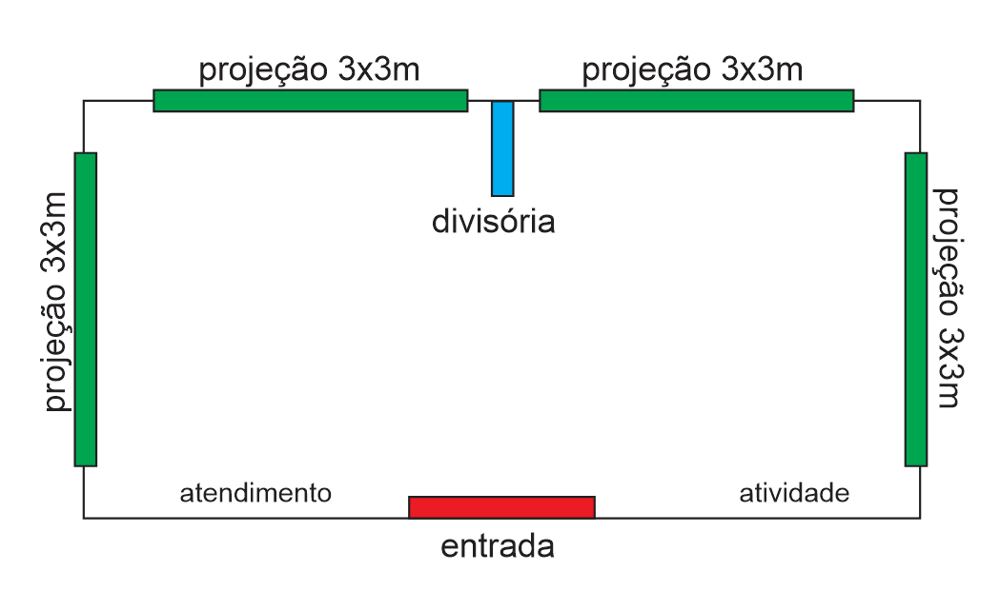

Desenho inspirado nas linhas da fachada fornecida: torre central, frontões, ornamentos e madeira.
8 × 4 m32 m² na planta proposta
4 projeçõesQuatro sessões independentes
20 pessoasQuatro grupos de cinco, por rodada
Concepção cultural: Associação dos Amigos do Castelinho / Rosane. Experiência e tecnologia: Delumo. Estudo sujeito à aprovação do espaço e ao teste de operação.
delumUma experiência que permanece
\ A ideia /
O Castelinho está em obras. Sua história continua aberta.
O visitante reconhece a fachada, atravessa o portal e assume o controle de um explorador. A cada descoberta, entende um pouco mais sobre Erechim e sobre o patrimônio que a cidade preserva.
01
Reconhecer e entrar
Fachada leve com a silhueta do Castelinho, cores e janelas características. Um portal no nível do piso convida a entrar. A fila fica organizada na área externa autorizada pela feira.
02
Escolher uma história
Um mediador organiza quatro grupos de cinco. Em cada grupo, uma pessoa navega com o controle Bluetooth e quatro acompanham, ajudam a encontrar pistas e decidem em conjunto.
03
Jogar e descobrir
Uma missão de aproximadamente quatro minutos combina exploração em 3D, um objeto histórico, um desafio simples e uma descoberta. Cada grupo tem seu próprio navegador e sua própria imagem.
04
Levar a experiência adiante
Na saída, o visitante recebe o selo Frinape 2026 e acessa o Passaporte do Castelinho por QR Code. Conteúdos complementares prolongam o contato com a memória local.
Quem participa
Moradores, estudantes, famílias, turistas e pessoas que nunca usaram um videogame. Comandos simples, orientação humana e alternativa de percurso assistido.
O que fica
Ambientes 3D, histórias pesquisadas, materiais educativos e uma versão do jogo que poderá circular em escolas e espaços culturais, conforme acordos de uso e manutenção.
Quatro janelas para a mesma história
A imersão vem da arquitetura cenográfica, da escala das imagens, do som e da participação. As telas podem mostrar lugares diferentes do Castelinho ao mesmo tempo.
\ Quatro projeções simultâneas /
Uma pessoa conduz. Cinco pessoas descobrem.
Quatro projetores no teto. Quatro computadores. Quatro controles Bluetooth. A mesma experiência cultural, com quatro percursos acontecendo ao mesmo tempo.
Conceito visual conforme o esboço fornecido · sala de 8 × 4 m · duas projeções no fundo e uma em cada lateral. Balcões dos dois lados da entrada, voltados para quem chega, com atendentes atrás. Divisória curta ao fundo. Público ilustrativo; operação prevista em quatro grupos de cinco.
01
Um controle por grupo
Uma pessoa assume a navegação. As outras quatro acompanham, interpretam as pistas e ajudam nas escolhas.
04
Quatro histórias em paralelo
Cada computador exibe sua própria câmera e seu próprio percurso. Uma ação em uma estação não muda as outras.
20
Participantes por rodada
Quatro navegadores e dezesseis acompanhantes. O controle pode ser revezado entre rodadas, com orientação da equipe.
A escala envolve. O grupo participa.
As projeções ocupam grandes áreas das paredes. Fotografias, objetos, mapas e personagens convidam o grupo a observar e conversar. Não é necessário usar óculos de realidade virtual.
\ Estudo ilustrativo · 4 projeções /
8 m de largura. 4 m de profundidade.
Duas projeções no fundo e uma em cada lateral. Quatro áreas de imagem com 3 m de largura × 2 m de altura, preservando a frente para a entrada.
Navegador com joystickAcompanhante4 grupos × 5 pessoasAzul: atendentes atrás dos balcões
Fundo: duas imagens de 3 m
As duas projeções de 3 m ficam lado a lado, separadas por uma faixa central de 1 m e com 50 cm livres em cada extremidade. O biombo nasce no meio dessa faixa e avança 1 m para dentro da sala, sem dividir o estande inteiro.
O intervalo de 1 m é entre as áreas de imagem; a distância entre os aparelhos no teto será definida pelas lentes.
Biombo com memória da cidade
Revestimento com fotografia da Prefeitura de Erechim nas duas faces. A foto final será indicada pela organização; as imagens da divisória no estudo são ilustrativas. Posição e tema já estão previstos.
Atendimento · frente esquerda
Recepção, formação dos grupos e apresentação do controle. Balcão à esquerda da entrada, voltado para quem chega; atendente atrás, pelo lado interno da sala. Preservar a passagem e a projeção lateral.
Atividade · frente direita
Conclusão da experiência, carimbo do passaporte e acesso aos conteúdos por QR Code. Balcão à direita da entrada, voltado para quem chega; atendente atrás, pelo lado interno da sala.
Ver o esboço de distribuição fornecido

Esboço do solicitante adotado como referência de distribuição. Distribuição preservada; as medidas de projeção do desenho foram atualizadas para 3 × 2 m nesta revisão. Sala de 8 × 4 m.
Planta de conceito. Símbolos dos projetores indicam quatro aparelhos no teto, sem fixar posição de instalação. Nas laterais, as projeções de 3 m ficam centralizadas nos 4 m de profundidade, com 50 cm em cada extremidade. A altura útil precisa acomodar os 2 m de imagem, suportes e instalação. Lotação de 20 participantes mais equipe, passagem, ventilação, sombras e estrutura dependem de validação técnica e das regras da feira.
\ A frente do estande /
O Castelinho convida a entrar.
Uma única face plana de madeira, revestida com adesivo impresso, traduz o Castelinho para o pavilhão da Frinape. Telhados, janelas e ornamentos fazem parte da impressão.
Estudo cenográfico gerado a partir da fachada fornecida. Frente de 8 m; vão de entrada de 2 m de largura × 2,5 m de altura. Fachada em uma face plana; detalhes arquitetônicos impressos no adesivo. Altura total e sustentação a compatibilizar com o pavilhão.
Silhueta reconhecível
Torre central, frontões laterais, lambrequins, telhados e janelas seguem a referência do Castelinho.
Construção cenográfica
Chapas retas unidas no mesmo plano, com sustentação posterior e adesivo aplicado na face frontal. O desenho simula telhados, janelas, molduras e ornamentos. Recorte apenas do contorno geral e do vão de entrada.
Entrada de 2 × 2,5 m
Portal central aberto, no nível do piso. Controle de entrada e saída pela equipe, com fila na área autorizada.
Referência original · arquivo 2027.png fornecido para a proposta.\ Visualize a atmosfera /
Uma simulação 360º. Quatro percursos para o público.
O vídeo fornecido apresenta um estudo visual de imersão na sala. Ele ajuda a entender a escala e a presença das imagens no ambiente.
Simulação visual fornecida pelo projeto. Registro de estudo, não demonstração do game final.
Multiplicar a experiência é o objetivo.
A proposta distribui quatro projeções simultâneas e independentes pelas superfícies da sala, com uma pessoa no controle e quatro acompanhando cada imagem. Cada grupo explora uma cena diferente, ampliando a participação.
A configuração de 8 × 4 m segue o esboço: duas áreas no fundo e uma em cada lateral. Atendimento à esquerda e atividade à direita da entrada completam o percurso, com divisória curta central ao fundo. O vídeo não exige que as quatro imagens formem um único panorama contínuo.
Referência de organização dos equipamentos fornecida em imagem referência1.jpeg.
delumExploração em terceira pessoa
\ O jogador é o visitante /
Caminhar. Investigar. Fazer parte da história.
A referência ao estilo GTA está na câmera acompanhando o personagem e na liberdade de caminhar pelo cenário. O universo, os personagens e as missões serão próprios do Castelinho, com foco cultural. A primeira versão terá exploração delimitada, orientação clara e desafios curtos.
Mover
Direcional para caminhar, câmera assistida e botão para recentralizar a visão. Comandos a validar com o controle Bluetooth.
Interagir
Um botão para abrir, examinar, ouvir ou responder. Pistas visuais e orientação do mediador.
Descobrir
Cada missão revela um fato ou saber e termina com uma conquista cultural.
CAPÍTULO 01 / 07 · ROTEIRO PROPOSTO
O mapa que conta uma história
Encontre um documento, observe seus detalhes e descubra sua relação com o território de Erechim.
Ambiente
Memorial e exposição permanente · revista, p. 15.
Ação
Examinar o documento e relacionar uma pista ao mapa.
Aprendizado
Compreender a atuação da Comissão de Terras a partir de fontes históricas.
7
Passaporte do Castelinho
“Visitante do Tempo — Frinape 2026” reconhece a participação. “Guardião do Castelinho” reconhece a jornada completa, que pode continuar depois da feira.
A estreia terá quatro missões curtas, uma por estação, selecionadas entre os sete capítulos. Os demais capítulos compõem a expansão. Não será necessário passar pelas quatro filas para concluir uma visita. Esta página apresenta o roteiro para avaliação; o jogo será desenvolvido após aprovação e análise do SketchUp.
\ Atendimento em grupos /
Quatro jogam. Vinte participam.
Rodadas curtas ajudam a organizar a fila. A estimativa abaixo separa quem navega com o controle de todos os participantes da experiência.
168participações estimadas / hora
1.340participações / dia
14.740participações no período
268 sessões de navegação por dia · 1.072 participações de acompanhantes.
67 rodadas completas por dia, com 20 pessoas por rodada.
Cálculo: 60 ÷ (missão + troca) × fator de operação × horas. Arredondamento diário para rodadas completas; cada rodada tem 4 navegadores + 16 acompanhantes. O fator de operação considera pausas, atendimento assistido e intervalos.
Estimativa de planejamento, sujeita a ensaio com público. Participações não são visitantes únicos: retornos e revezamentos podem contar a mesma pessoa novamente. O número real também depende da demanda e da ocupação dos grupos.
Mediação dentro da sala
Orientar os quatro grupos, apoiar as escolhas, auxiliar quem precisa e conduzir o reinício. Acompanhantes participam das descobertas sem disputar o controle.
Recepção e organização
Formar grupos de cinco, apresentar os comandos e organizar a entrada e saída. Prever suporte técnico, pausas e revezamento da equipe.
\ Tecnologia a serviço da história /
Quatro estações. Controles Bluetooth.
Cada joystick comanda somente o computador de sua estação. Esse computador envia sua imagem ao projetor correspondente.
Controle Bluetooth→Computador→Projetor no teto→Grupo de 5
O controle cabe em uma mão
Referência visual: controle compacto Shinecon, modelo 1023, com pequeno direcional analógico e botões. O movimento do personagem e o botão de interação serão adaptados ao dispositivo.
Câmera assistida: facilitar a orientação com ajuste automático e comandos simples, para quem não tem familiaridade com jogos.
O modelo do anexo é uma referência a testar. Compatibilidade Bluetooth com o computador, leitura dos botões, alcance e resposta no game precisam ser confirmados antes da aquisição.
Controle Bluetooth · ilustração de referência
Item
Quantidade
Aplicação
Projetores no teto
4
Uma projeção independente por estação; superfícies de 3 × 2 m.
Computadores para jogo 3D
4
Uma sessão do game por equipamento; desempenho validado com o cenário.
Joysticks Bluetooth
4 + 1 reserva
Pareamento identificado por estação, carga ou pilhas e reposição.
Áudio e legendas
4 estações
Som direcional de volume controlado e legendas para todo o grupo.
Instalação e energia
1 conjunto
Suportes, sinal de vídeo, cabeamento protegido, ventilação e alimentação.
Imagem de 3 × 2 m: validar lente e proporção
A área de 3 × 2 m tem proporção 3:2. Para uma imagem em 16:9 com 3 m de largura, a altura exata é 1,6875 m, aproximadamente 1,69 m. Em uma superfície de 3 × 2 m, isso deixa cerca de 15,6 cm de margem acima e abaixo, se centralizada. Para preencher os 3 × 2 m, o jogo deve ser enquadrado em 3:2. O teste definirá a opção, preservando as proporções da imagem. A distância de projeção depende da lente: largura da imagem × relação de projeção.
Por exemplo, relação 0,52 corresponde a aproximadamente 1,56 m para uma imagem de 3 m de largura. É apenas uma referência geométrica, não uma seleção de equipamento. Testar foco, luminosidade, sombras e resposta ao controle na sala montada. Referência técnica de relação de projeção ↗
Pronto para a feira, mesmo sem internet
O jogo deve executar localmente, com início simples, reinício entre grupos e recuperação rápida. Internet poderá apoiar manutenção e passaporte, sem ser necessária para completar a missão na sala.
\ Investimento por configuração /
Uma configuração definida. Orçamento a preencher.
Quatro projeções independentes. Registre as cotações dos serviços e conjuntos para preparar a reunião de aprovação.
Preencha a marca ou o fornecedor e o valor total de cada conjunto ou serviço. Para os projetores, informe o total dos quatro aparelhos. Todos os valores preenchidos entram na soma; campos vazios permanecem a cotar.
Componente
Marca/fornecedor
Quantidade
Total cotado (R$)
Projetores
4
Computadores
4
Joysticks Bluetooth, reserva e áudio
1 conjunto
Pesquisa, roteiro e curadoria
1 serviço
Game, 3D e conteúdo audiovisual
1 projeto
Fachada, biombo e montagem
1 conjunto
Suportes, cabeamento e infraestrutura
1 conjunto
Acessibilidade, testes e formação
1 serviço
Operação, transporte e desmontagem
1 serviço
Gestão, continuidade e demais custos
1 serviço
Subtotal dos valores preenchidosNenhum valor informado
10 itens a cotar
Valores e fornecedores são salvos automaticamente neste navegador.
O botão salva a cópia local e, quando o acesso online estiver ativo, envia também ao banco. Confira o status de salvamento. Uma cópia em arquivo pode ser baixada ao final da proposta.
Prever frete, instalação, tributos, licenças, espaço da feira e reserva operacional na composição final. O preenchimento serve para discussão e não formaliza contratação.
delumAcesso, memória e continuidade
\ Finalidade cultural /
O investimento continua depois da Frinape.
Produzir uma experiência de educação patrimonial que aproxime a população da história de Erechim e do Castelinho durante sua restauração.
Acesso desde o início
Proposta de participação gratuita, legendas, contraste, áudio descritivo e comandos adaptáveis. Atendimento sentado e percurso assistido a validar com usuários. A circulação da sala será revista por responsável técnico.
Memória com responsabilidade
Pesquisa no acervo autorizado, revisão histórica e identificação de reconstituições. Personagens e depoimentos têm direitos de uso definidos. Cadastro não será condição para jogar.
Três tempos claramente identificados
Histórico: reconstituições documentadas. Presente: registros datados da restauração. Futuro: ambientes previstos no projeto de ocupação. O SketchUp orienta a arquitetura; ele não comprova como cada sala era no passado. A cronologia de 1915/1916 e as narrativas sobre a construção serão validadas antes da produção.
Complementaridade: a revista já prevê uma fase de tecnologias. Conferir o que está financiado ou contratado antes de incluir novas despesas.
Patrocínio: “Empresas Guardiãs da Memória” pode apoiar a realização. Reconhecimento de marcas segue as regras aplicáveis, sem condicionar o acesso.
Monetização futura: loja, contribuições voluntárias e experiências adicionais dependem de plano próprio. A experiência cultural desta proposta é gratuita; acesso à feira precisa ser articulado.
Legado: definir titularidade e licença do jogo, entrega de arquivos, responsável por manutenção, destino dos equipamentos e uso educativo após o evento.
\ Decisões para avançar /
Combine as próximas etapas. Salve os agendamentos.
Preencha as datas, os responsáveis e os encaminhamentos. Os campos mantêm uma cópia neste navegador; a seção de salvamento online informa a situação da sincronização entre aparelhos.
01
Conceito e espaço
Alinhar narrativa, fachada, sala de 8 × 4 m e condições do pavilhão.
02
SketchUp, acervo e fotografia
Receber modelo 3D, registros históricos e foto da Prefeitura; conferir direitos de uso.
03
Teste dos projetores e controles
Validar as quatro áreas de 3 × 2 m, pareamento Bluetooth, sombras e áudio.
04
Roteiro e primeira missão
Aprovar visual, história, navegação e um percurso jogável.
05
Quatro missões e passaporte
Concluir os percursos da estreia, materiais e recursos de acessibilidade.
06
Ensaio com quatro grupos
Testar vinte participantes, duração das rodadas e operação da equipe.
07
Montagem e passagem técnica
Conferir estrutura, conteúdo e funcionamento com liberação da feira.
Frinape · 12 a 22 de novembro de 2026
Datas do evento. Os agendamentos acima serão definidos pela equipe, considerando a aprovação do projeto, disponibilidade do acervo e liberação do espaço.
Marcar etapas e salvar campos não registra assinatura ou aprovação institucional.
Projeto salvo online
Valores, marcas, fornecedores, agendamentos e decisões ficam juntos na mesma proposta. O acesso online é protegido; o status abaixo informa se o envio ao banco foi concluído.
Verificando conexão…
Escolha a versão para continuar
Carregar a versão online prepara uma cópia dos campos atuais para download antes de substituí-los. Enviar esta versão mantém a anterior no histórico do banco.
Continue de onde parou
A cópia local é salva automaticamente. Com o banco conectado e o acesso online ativo, os preenchimentos também são sincronizados entre aparelhos. Você pode baixar uma cópia em arquivo a qualquer momento.
Ao abrir um arquivo, os campos atuais são substituídos pelos dados dele. Baixe uma cópia antes se quiser preservar as duas versões. Limpar os dados do navegador remove a cópia local.
delumPesquisa aplicada ao conceito
\ Referências verificadas /
Experiências reais. Aprendizados para o Castelinho.
01
Musée de l’Homme + Ubisoft
Em 2026, a Ubisoft apresentou uma instalação educativa de nove minutos com tela de parede e interface tátil, inspirada no Discovery Tour. A referência mostra como um universo 3D histórico pode ser adaptado a uma visita de museu.
Aplicação proposta: uma missão curta e clara, com navegação acessível ao visitante ocasional.
Space Flight Academy atende até 15 participantes em um jogo coletivo de perguntas. Outras experiências da galeria combinam modelos 3D e exploração panorâmica.
Aplicação proposta: dimensionar a participação pelos pontos de controle e pela mecânica. Quinze pessoas num quiz não equivalem a quinze personagens explorando livremente.
A fabricante anunciou uma sala interativa com projeções em paredes e piso e uma demonstração museológica de três paredes tratadas como uma única tela.
Aplicação proposta: a arquitetura pode ampliar a imersão. No Castelinho, imagens independentes simplificam a composição, mas continuam exigindo estudo ótico e operação.
Esses casos são referências de linguagem e operação. Não comprovam preço, lotação ou viabilidade dos equipamentos no estande proposto.
Base documental do Castelinho
Revista Castelinho 2025: pp. 6–8, conceito e usos; pp. 9–19, ambientes; p. 20, fases previstas. Projeto Castelinho Vivo — Frinape: narrativa, passaporte, mediação e legado. Textos de Rosane: jornada em capítulos e pertencimento. As imagens abaixo são páginas da revista fornecida para o projeto.
Pesquisa consultada em 14/09/2026. Sala de 8 × 4 m e quatro projeções de 3 × 2 m, conforme o esboço mais recente do solicitante. Quantidades, atendimento, cronograma, planta e missões são proposições para validação. Disponibilidade e especificações dependem de validação com os fornecedores.
Imagens de sala e fachada são estudos gerados por inteligência artificial com base nas referências fornecidas. Não representam documentação histórica nem projeto executivo. As dimensões indicadas na planta orientam o próximo estudo técnico.
Enquanto o Castelinho se restaura, a cidade pode entrar na sua história.